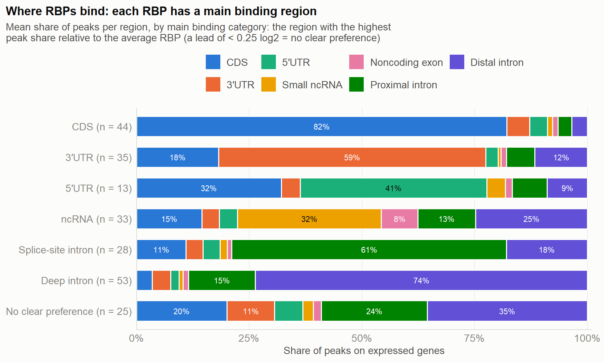
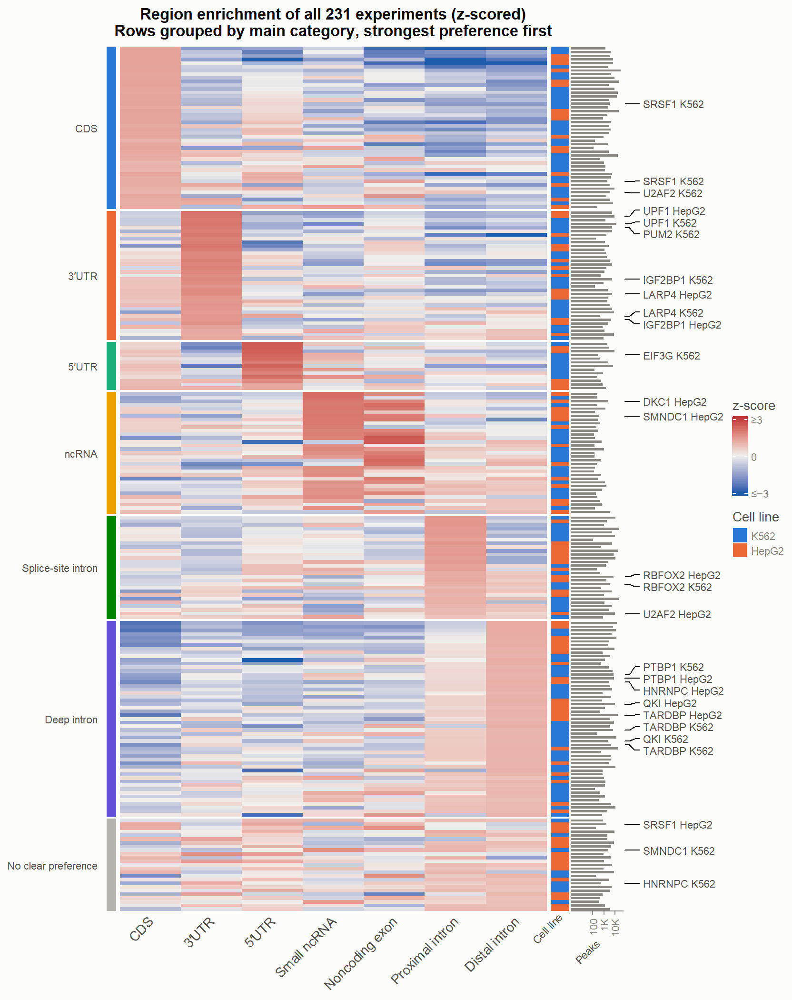
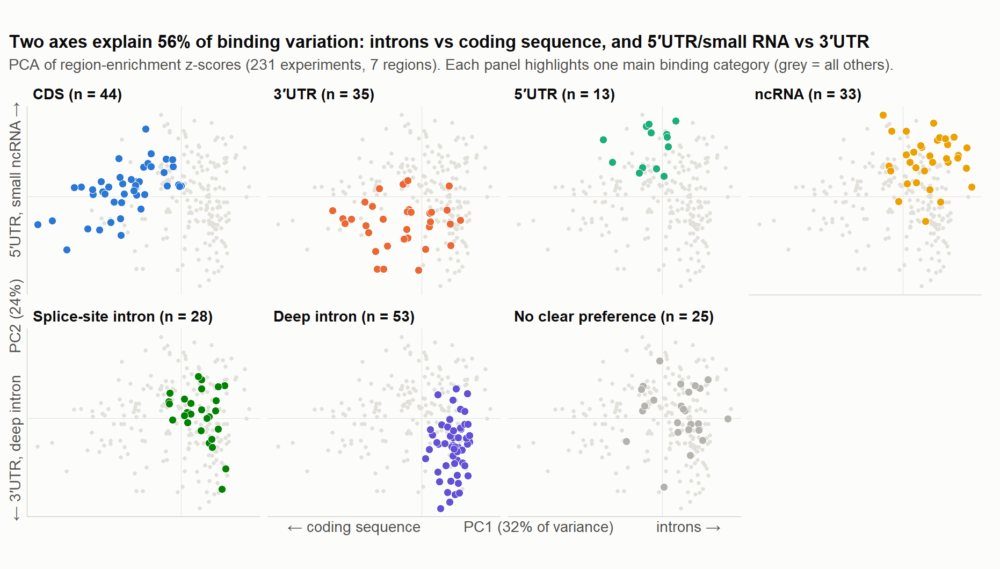
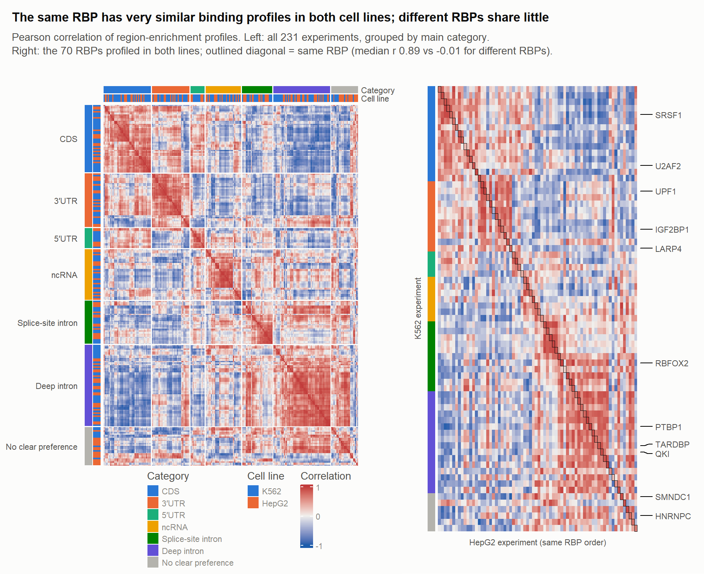
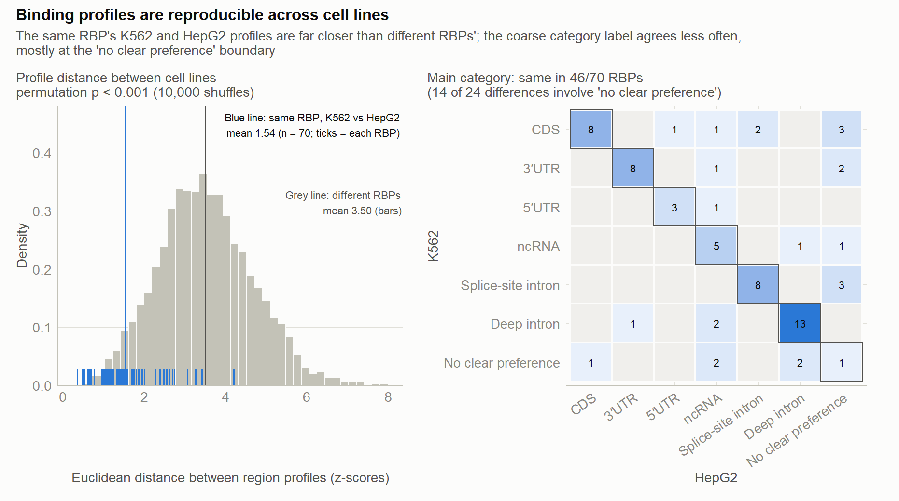

Where RBPs bind
Which transcript regions each RBP binds, and how similar different RBPs are
Each peak was assigned to one transcript region by its midpoint: coding sequence (CDS), 3′UTR, 5′UTR, small ncRNA, noncoding exon, proximal intron (≤ 500 nt from a splice site) or distal intron. An experiment’s main binding category is the region where its share of peaks is highest relative to the average RBP. Raw shares would mostly reflect region length.
Why categories rather than clusters?
The original plan clustered RBPs by their region profiles. The clusters were weak: mean silhouette 0.18–0.21 for 4–12 clusters, with no natural number of groups, and membership was unstable under resampling. The profiles form a continuum, so a transparent rule (main region, or “no clear preference” if the lead is under 0.25 log2) describes them more honestly.
Each RBP has a main binding region

Extended legend
- Experiments: 231 eCLIP experiments with ≥ 100 peaks; peaks on expressed genes only.
- Category rule: for each region, the experiment’s peak share is compared with the mean share across all experiments in the same cell line (log2 ratio). The category is the group of the highest-scoring region.
- Groups: CDS; 3′UTR; 5′UTR; ncRNA (small ncRNA + noncoding exon); splice-site intron (proximal intron); deep intron (distal intron).
- An experiment whose best group leads the next by < 0.25 log2 (< 1.19×) is labelled “no clear preference”.
- Category sizes: CDS 44, 3′UTR 35, 5′UTR 13, ncRNA 33, splice-site intron 28, deep intron 53, no clear preference 25.
- Bars: each bar shows the mean share of peaks in each of the 7 regions, averaged over the category’s experiments and normalised to 100%. Labels are shown for segments ≥ 8%.
Script: analysis/R/05_binding_landscape_figures.R; data: analysis/results/tables/rbp_categories.tsv.

Extended legend
- Enrichment: for each experiment and region, log2 of the region’s share of peaks (on expressed genes) divided by the region’s share of the expressed transcriptome’s length in that cell line.
- Scaling: values are z-scored per region across the 231 experiments and capped at ±3. Z-scoring removes the region-wide length effect, under which introns look depleted for every RBP.
- Row order: grouped by main category, strongest preference (largest lead) first.
- Right-hand annotations: cell line, peak count (log scale) and selected well-studied RBPs.
Script: analysis/R/05_binding_landscape_figures.R; data: analysis/results/tables/rbp_clusters.tsv (z-scores).
Two axes describe most of the variation
A principal component analysis (PCA) of the seven region scores combines them into a few independent axes. Each axis is ranked by how much of the difference between experiments it captures. The first two capture 56%:
- PC1 (32%) separates intron binders from coding-sequence binders. RBPs that bind near splice sites or deep in introns sit on the right; RBPs that bind within the coding sequence sit on the left.
- PC2 (24%) separates the 5′ end and small RNAs from the 3′ end. RBPs that favour 5′UTRs and small non-coding RNAs (snoRNAs, snRNAs) sit at the top; RBPs that favour 3′UTRs and deep introns sit at the bottom.

Extended legend
- PCA: run on the 231 × 7 matrix of z-scored region enrichments (Figure 2), centred, without further scaling (
prcompin R). - Variance explained: PC1 32%, PC2 24%, PC3 14%. PC3 is not shown; it mainly separates 3′UTR and noncoding-exon binding.
- Axis meaning: the arrow labels come from the region loadings (
analysis/results/tables/pca_loadings.tsv).- PC1: positive for proximal and distal intron, negative for CDS.
- PC2: positive for 5′UTR and small ncRNA, negative for 3′UTR and distal intron.
- Points: each point is one experiment, in the same position in every panel.
- Caveat: the categories were assigned from the same region profiles, so some separation is expected by construction. The figure shows where the categories sit within the continuous variation.
Script: analysis/R/05_binding_landscape_figures.R; data: analysis/results/tables/pca_variance.tsv, pca_loadings.tsv.
How similar are the experiments?

Extended legend
- Similarity: Pearson correlation between two experiments’ 7-value z-scored region profiles (Figure 2). Red = similar, blue = opposite profiles.
- Left (231 × 231 experiments): rows and columns are grouped by main category. Within each category they are ordered by average-linkage hierarchical clustering on 1 − r. Side bars show category and cell line.
- Right (70 RBPs with ≥ 100 peaks in both lines): rows are K562 experiments, columns the HepG2 experiment of the same RBP, in the same order, so the diagonal (outlined) compares each RBP with itself. Where an RBP has two K562 experiments, the first listed is used. About ten well-studied RBPs are labelled.
- Result: same-RBP median r = 0.89; different RBPs median r = -0.01.
Script: analysis/R/05_binding_landscape_figures.R.

Extended legend
- Distance: Euclidean distance between two experiments’ z-scored region profiles.
- Left:
- grey histogram: all 4,830 K562–HepG2 pairs of different RBPs (mean 3.50);
- blue ticks: the 70 same-RBP pairs (mean 1.54);
- vertical lines: the two means.
- Test: permutation test (10,000 random re-pairings of K562 and HepG2 experiments, one-sided), p < 0.001.
- Right: cross-tabulation of main category in K562 (rows) and HepG2 (columns) for the 70 RBPs; the diagonal (outlined) means agreement.
- The category agrees in 46 of 70.
- Most disagreements involve “no clear preference”: an experiment near the 0.25 log2 cut-off can fall on either side in the two lines even when the profiles are similar.
Script: analysis/R/05_binding_landscape_figures.R; data: analysis/results/tables/concordance.tsv, category_concordance.tsv.
Key takeaways
- Most RBPs have a clear main binding region. 206 of 231 experiments favour one region group:
- CDS 44, 3′UTR 35, 5′UTR 13;
- ncRNA 33;
- splice-site intron 28, deep intron 53.
- Binding location points to function:
- splice-site and deep-intron binders: pre-mRNA processing;
- 3′UTR binders: mRNA stability;
- 5′UTR binders: translation;
- ncRNA binders: small-RNA processing.
- Binding profiles form a continuum, not discrete classes. Two axes, introns vs coding sequence and 5′UTR/small RNA vs 3′UTR, explain 56% of the variation; clustering found no natural groups.
- A binding profile is a property of the protein. The same RBP’s K562 and HepG2 profiles correlate with median r = 0.89 (different RBPs: -0.01), and their distance is less than half that between different RBPs (1.54 vs 3.50, p < 0.001).